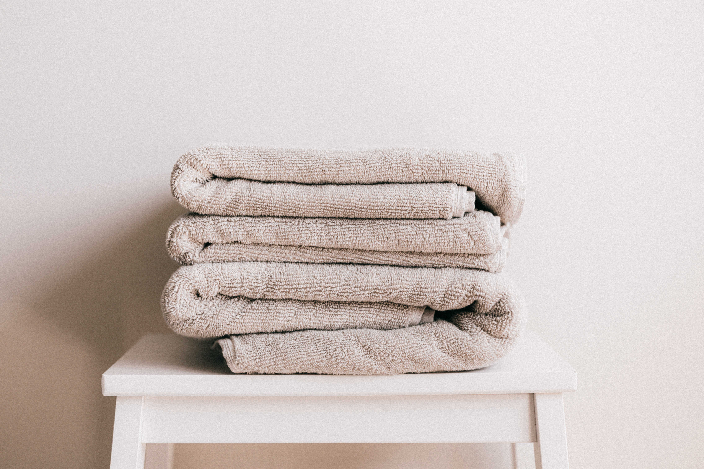
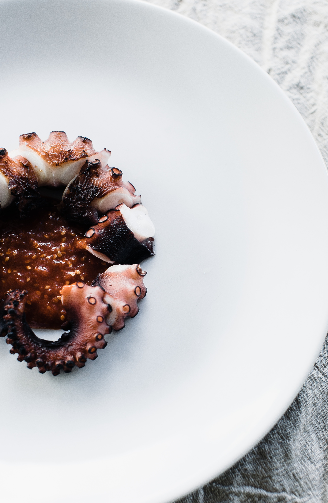

Arrive safely, adventure prepared

The Hitchhiker's Guide to the Galaxy or as it's simply known, the Guide. This will help you navigate your interstellar travel to our restaurant situated at the end of time and matter.
A towel. If you have ever used the Guide before, you will know that a towel is just about the most important item one can carry. Especially if the need to hitchhike should arise.

Access to an Infinite Probability Drive. A wonderful method of crossing interstellar distances without having to muck about in hyperspace.
An appetite. Not only does Milliways offer sentient creatures bred to want to be eaten, our wine list is more than three volumes long.